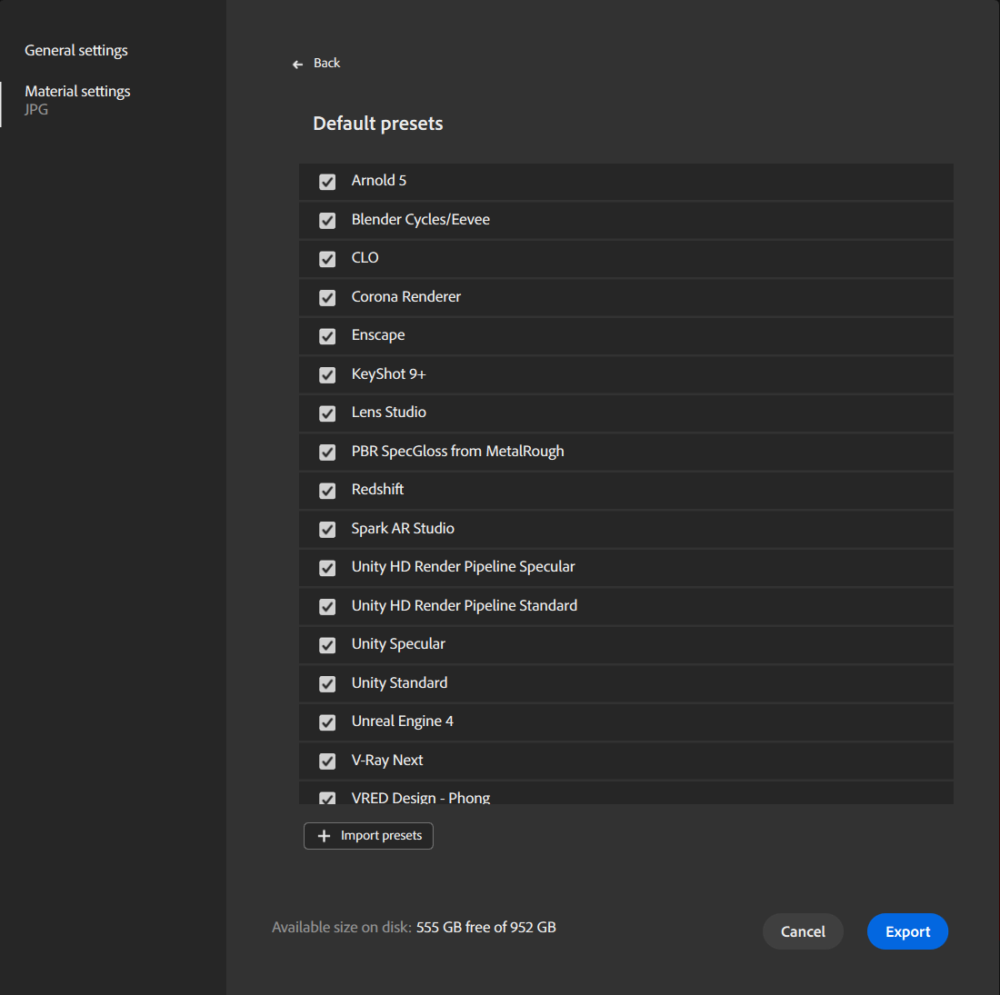

Presets allow you to quickly configure your exported file for a given application. You can also create custom Presets to fulfill your needs if you're using a pipeline not covered by the default presets.
Use Presets
Presets are only available when exporting to an image file. When exporting to SBS or SBSAR, presets aren't needed.
To access Presets:
- Open the Export window:
- Use the Export panel in the Right bar.
- Use File > Export as...
- Use shortcut Ctrl + E.
- On the left side of the Export window, select Material settings.
- Select an image format (EXR, JPEG, PNG, TARGA, TIFF)
- The Preset list appears.

Use the Presets dropdown to select a preset, or use the Manage presets button next to the dropdown to manage your presets.
Manage Presets
Use the Presets dropdown to select a preset, or use the Manage presets button next to the dropdown to manage your presets.
Default presets

For all default presets, you can activate/deactivate them. If a default preset is deactivated, it won't be visible in the Preset drop-down list.
By default all presets are activated.
Custom presets
You can activate/deactivate custom presets. If a custom preset is deactivated, it won't be visible in the Preset drop-down list.
You can also:
- Rename: Change the name of the preset in the interface.
- Replace: Change the file of your preset to a new version.
- Delete: Delete the preset.